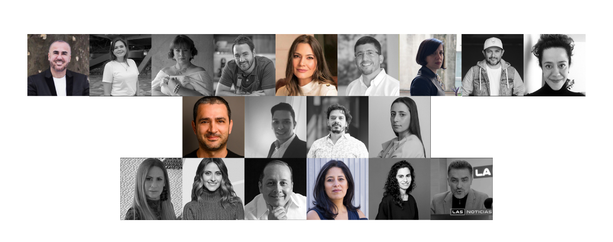

SOBRE IXEL
QUIENES SOMOS
LA MARCA
IXEL es una marca que promueve el SISTEMA MODA, su fortalecimiento y desarrollo, así como su interacción con
las demás disciplinas del diseño, otros universos creativos y sectores afines como el turismo. Es creadora de
la red académica del Sistema Moda más grande del continente, con más de 54 universidades adscritas y se ha
convertido, además, en una de las organizaciones líderes en el impulso de la MODA ÉTICA en Latinoamérica.
EL CONGRESO
IXEL es gestora del CONGRESO LATINOAMERICANO DE MODA que, desde hace 16 años, es punto de encuentro por
excelencia entre academia e industria; un espacio para descubrir herramientas de cara a los actuales y futuros
escenarios de sostenibilidad, productividad y competitividad, en el que se reúnen cerca de 1.200 asistentes en
torno a una nutrida agenda académica que involucra temas que van desde creación, producción sostenible y
desarrollo de producto hasta mercadeo de moda e inteligencia de consumo, comercialización, comunicación y
periodismo de moda.
- Investigadores, docentes, profesionales y estudiantes
- Emprendedores, pequeños y medianos empresarios o grandes industriales
- Periodistas especializados, editores de moda, bloggers y creadores de contenido
- Consultores y agencias de mercadeo y publicidad
- Productores, modelos, fotógrafos, estilistas
- Y público fashionista en general
ENCUENTRO DE INDUSTRIAS CREATIVAS
Sabemos que la moda hace parte de ese grupo de industrias derivadas del talento y el capital intelectual que
generan gran parte de la riqueza mundial. Según el modelo de Economía Creativa o Economía Naranja planteado
por John Howkins, promovido y globalizado por las Naciones Unidas, estos universos capaces de transformar
ideas en bienes y servicios y que involucran conocimiento, tradición, habilidad y creatividad; deben estar
dispuestos a cohabitar un mismo ecosistema y a trabajar de forma interdisciplinaria para generar mayor valor y
fortalecer así su oferta. Por ello, Desde el 2017 IXEL ofrece distintos escenarios en los que combina, de
forma teoría y práctica: moda, diseño de espacios, textil, gráfico o industrial, artesanía, artes plásticas,
escénicas o audiovisuales, literatura y gastronomía. Este ENCUENTRO DE INDUSTRIAS CREATIVAS se realiza de
forma complementaria durante los días del Congreso.
IXEL ITINERANTE
Claramente, la moda y en general todas las industrias creativas y culturales, se conectan de forma perfecta con
el turismo, cada vez que poseen importantes atractivos para los visitantes que se convierten en “ventajas
comparativas” para la promoción de destino y el posicionamiento de la “Marca - Ciudad” o “Marca – Región”. Es
así como, en el 2022 IXEL lanzó “IXEL ITINERANTE”, en un formato especial que contempla pasarelas, exposiciones
y experiencias multisensorial, en un alucinante viaje para conocer y recorrer distintos “Destinos Creativos” a
través de su moda y cultura.
NUESTRA ORGANIZACIÓN
CONCILIO ACADÉMICO
Un organismo constituido por IXEL que agrupa decanos y directores de programas de diseño, diseño de moda,
diseño textil, entre otras carreras conexas, de las principales universidades e instituciones educativas en
Latinoamérica, así como, representantes escuelas aliadas en Europa y Estados Unidos.
Estos líderes académicos se reúnen en el marco de cada edición del congreso para afianzar lazos de cooperación
interinstitucional e intercambiar experiencias y contactos. De igual forma, participan activamente en la
programación del CONGRESO ACADÉMICO DE INSTITUCIONES DE MODA – CAIM, un espacio especializado, diseñado y
dirigido por el COMITÉ CIENTÍFICO DE IXEL en el que investigadores, docentes y catedráticos, presentan
ponencias, publicaciones y organizan mesas de trabajo para debatir sobre el futuro de la industria de la moda,
el diseño y sus tendencias asociadas a reflexiones éticas.
COMITÉ CIENTÍFICO
- LAURA NOVIK. UNIVERSIDAD ATLÁNTIDA, Argentina
- REGINA ROOT. UNIVERSIDAD WILLIAM & MARY VIRGINIA, Usa
- CAROL GARCIA. CENTRO UNIVERSITARIO BELAS ARTES, Brasil
- ADRIANA BETANCUR. CORPORACIÓN COLEGIATURA COLOMBIANA, Colombia
- CAROLINA AGUDELO. UNIVERSIDAD DE LOS ANDES, Colombia
- LORENA LEDESMA. UNIVERSIDAD AUTÓNOMA DE AGUASCALIENTES, México
- LINA ORTIZ. INSTITUCIÓN UNIVERSITARIA PASCUAL BRAVO, Colombia
- DANILO CAÑIZARES, Director Académico IXEL
CONSEJO DIRECTIVO
ERIKA ROHENES, Presidenta Ejecutiva IXEL
Empresa Privada:
- JOSÉ JAVIER VÉLEZ
- DIANA GEDEON
- GABRIELA VON THURONYI DE LONDOÑO
Gremios:
- ANDREA PIÑA, Presidenta Ejecutiva Cámara de Comercio de Cartagena
- CARLOS PAYARES, Director de Competitividad empresarial de la Cámara de Comercio de Cartagena
- JAIME ALBERTO CABAL, Presidente FENALCO
- RICARDO GIL, Vicepresidente de Negocios y Servicios a los Afiliados FENALCO
ESTADÍSTICAS
ASISTENCIA
PARTICIPANTES
Entre 1.000 y1.200 asistentes promedio por edición.
PROCEDENCIA ASISTENTES
INTERNACIONALES 28%
NACIONALES 72%
PERFIL ASISTENTES
DISEÑADORES, PROFESIONALES, EMPRESARIOS, EMPRENDEDORES 30%
ESTUDIANTES 29%
PRENSA, GENERADORES DE CONTENIDO 22%
ACADÉMICOS 19%
ALCANCE MEDIÁTICO
+ de 2.400 millones de pesos en free press por edición **media estadística durante las últimas 10 ediciones
realizadas
HISTÓRICO
12 ediciones con + de 250 panelistas y conferencistas
CONFERENCISTAS Y PANELISTAS
Algunos de los conferencistas, panelistas y moderadores invitados al congreso durante sus 12 ediciones (**los
cargos corresponden a los ocupados en el momento de su participación; el país indica su lugar de origen o, en
algunos casos, de residencia).
IXEL 2022

- Ricardo Seco - Diseñador Mexicano
- Amira Saim, Periodista Senior Editor Vogue - Gq - A.D. Condenast Américas, Venezuela-México.
- Abdullah Abo Milhim, Director Instituto Marnagoni Londres, Líbano - U.K
- Carolina Agudelo, Coordinadora De Diseño En Universidad De Los Andes, Colombia
- María Teresa Fernández, Secretaria De Cultura Barranquilla, Colombia
- Jessica De La Peña, Comunicadora Social Y Periodista RCN Televisión, Colombia
- Yasmin Sabet, Directora Creativa Mola Sasa, Colombia
- Luz Lancheros, Periodista De Moda, Editora Nueva Mujer, Colombia
- Tanya Meléndez, Senior Curator Museum @ F.I.T. Nyc, -México - USA
- Eugenia Maurello, Periodista Diario La Nación - Revista Ñ Y Viva, Creadora Podcast Lamodadice, Argentina
- Ricardo Meneses, Actor Director, Artista Rockero, Colombia
- David Daza, Productor Musical Experto En Entretenimiento, , Colombia
- William Calderón, Periodista La FM, Colombia
- Juan David Montoya, Chef, Colombia
- Rubén Díaz, Periodista Editor Fashion News, México
- José Miguel Valdivia, Diseñador, Perú
- Laura Novik, Universidad De San Andrés Y Universidad Atlántida, Argentina
- Adriana Betancur, Directora Nuevos Mundos Colegiatura, Colombia
- Carol García, Universidad De Bellas Artes De Sao Paulo, Brasil
- Regina Root, Universidad William & Mary, USA
- Bracey Wilson, Director Académico Master Marketing Universidad Adolfo Ibáñez, Chile
- Edward Salazar, Sociólogo, Magister en Estudios Culturales, Colombia
- Ángela Dotor, Directora Diseño Universidad Jorge Tadeo Lozano, Colombia
- Neide Schulte, Universidad De Santa Catarina, Brasil
- Lina María Ortiz, Decana Diseño Universidad Pascual Bravo, Colombia
- Martin Rodríguez, Director Diseño Universidad Veritas - Costa Rica, Colombia
- Rocío Lecca, Fundadora y Directora Chio Lecca Fashion School, Perú
- Diego Escobar, Director Diseño Universidad Autónoma De Manizales, Colombia
- Graciela Reynoso, Directora Diseño Universidad Autónoma De Aguascalientes, México
IXEL 2021

- Carlos Montaña–Hoyos, Fundador-Vicedecano Del Instituto De Diseño E Innovación De Dubái
- Miguel Angel Gardetti, Argentina, Fundador Y Director Del Centro De Estudios Para El Lujo Sustentable,
Argentina
- Andrea Gaytán Cuesta, Phd Y Master En Relaciones Internacionales Universidad Degli Studi De Bolonia.
- Sandra Rech -Diseño De La Universidad De Lisboa
- Luz Briceño Guarachi -Fundadora Y Ceo The Copper Company, Chile
- Carla Sabbatini -Directora Ejecutiva De La Cátedra Unesco De Educación Para La Sostenibilidad Y La
Ciudadanía Global, Argentina
- Estel Vilaseca -Creadora De It Fashion El Primer Blog De Moda Mundial, Creadora De Contenido Para Inditex Y
Tous, España
- Simdiso Khumalo -Diseñadora Textil Sustentable, Sudáfrica
- Caty Villota, Creadora De Fashion Radicals News, Colombia
- David Shah -Editor Para Pantone Y Metropolitan Publishing Bv, Alemania
- Rosalina Villanueva -Consultora De Tendencias De Wgsn Para Latinoamérica, México
- Vanessa Rosales -Escritora E Historiadora Colombiana
- Irvin Pérez -Presidente Del Fondo Nacional Del Turismo De Colombia Fontur
- Samuel Reyes -Director De Pr Management, México
- Pilar Castaño-Periodista Y Escritora Colombiana
- Jaime Rodriguez -Chef Ejecutivo Y Co-Propietario De Celele, Colombia
- Carmen Vásquez –Periodista Colombiana
- Adriana Lucia -Cantautora Colombiana
- Lucy Espinosa -Gestora Cultural Y Turismo Sostenible, Colombia
- Perla Dávila -Diseñadora Colombiana
- Liliana Atencia -Directora De Jazz And Jam, Colombia
- Beatriz Arango -Periodista Colombiana Elisa Chiodo -Directora De Los Master Visual Brand Design & Business
Design De Domus Academy, Italia
- Jon Marín -Instituto Europeo De Diseño De Barcelona, España
- Rosario Mendoza -Diseñadora Especialista En Diseño Artesanal, Ganadora De Emmy A Mejor Vestuario, México
- Jose Miguel Valdivia -Diseñador Peruano
- Juan Pablo Socarras -Diseñador, Colombiano
- Ruben Diaz -Periodista, Director Y Editor De Fashion News, México
- Adriana Marina -Fundadora De La Ong Hecho Por Nosotros, Argentina
- Alice Otegui –Diseñadora Uruguaya Angelica Mayolo Obregón -Ministra De Cultura De Colombia
- Trinidad Zaldivar, Jefa División De Asuntos Culturales, Solidaridad Y Creatividad Del Bid En Chile
- Julia Daza -Experta En Comunicación Política Y Asesora En Asuntos Sociales Y Culturales, Colombia
- Andrea Jaramillo Char-Periodista Colombiana
- Alex Quessep-Arquitecto Y Cocinero, Especialista En Sabores Caribeños, Colombia
- Camila Villamil -Periodista Colombiana
- Angela Zuluaga -Vicepresidenta Asuntos Públicos, Comunicaciones Y Sostenibilidad Para Latinoamericana De
Cocacola Company, Colombia
- Helena Fadul -Estratega En Comunicación Y Mercadeo De Moda Y Belleza. Colombia
- Luz Maria Rodriguez -Artesana, Colombia
- Dayana Marti -Artesana, Venezuela
- Kika Rocha -Editora De Moda Y Belleza Revista People En Español, Colombia.
IXEL 2020

- Nina Garcia -Editora En Jefe Elle Magazine, Colombia/Usa
- Fernando García -Director Creativo Oscar De La Renta, Rep. Dominicana/Usa
- Santiago Giraldo –Flash Fashion, Colombia
- Mariano Alesandro -Dir. Pensamiento Futuro Index Theproject, Argentina/Dinamarca
- Ana Torrejón -Dir, Editorial L’officiel, Argentina
- Laura Novik–Raíz Diseño, Argentina
- Tiziana Dominguez -Directora Creativa Adolfo Domínguez, España
- Marta Aguirrezabal-China Agencia, España
- Pilar Castaño, Pilarmode, Colombia
- Eduardo Escobedo -Director Plataforma Resp, México/Suiza
- Lina Bustillo -Diseñadora Bienes De Lujo, Colombia
- Giorgio Laboratore, -Naba , Italia
- Marina Spadafora –Domus, Italia
- Emanuela Prandelli, -Sda Bocconi School Of Managment , Italia
- Claire Swift -Ual London College Of Fashion, Reino Unido
- Giovanna Danies - Micro Biologa Uniandes, Colombia
- Luiz Arruda, Wgsn Mindset Latam - Brasil
- Tom Szaky-Fundador Terracycle Y Loop Store, Usa
- Angelica Gallón-Dir. Editorial Televisa Digital, Colombia / México
- Martha Lucía Ramírez-Vicepresidenta De Colombia
- Margarita Oliva Sainz De Aja - Lider Woman In Business Council España/Usa
- Adriana Aristizabal-Periodista,Colombia Ceo Ivoive Usa
- Carmen Vásquez -Ministra De Cultura De Colombia
- Raquel Garavito-Presidenta Fontur, Colombia
- Diana Guerra -Pontificia Universidad Católica , Perú
- Irvin Pérez -Pte. Corpoturismo Ctg
- Saia Vergara –Dir.Ipcc Ctg
- Carol García –Belas Artes, Brasil
- Ana María Fríes -Gerente General Artesanías De Colombia
- Roxana Amarilla -Directora Artesanías Tradicionales, Argentina
- Christian Nieman -Arquitecto Diseñador, Holanda/Colombia
- Rocío Arias Holman -Dir.Silla Verde, España/Colombia
- María Luisa Ortiz –Diseñadora Colombia
- Jessica Macmaster –Vp Excelencia Corporativa Esenttia, Colombia
- Gabriel Farias Iribarren -Sourcing De Moda En Asia, Argentina
- Carolina Obregón –Universidad De Los Andes, Colombia
- Juliana Trujillo -Madre Tierra, Colombia
- Eleonora Morales –Periodista, Colombia
VERSIONES ANTERIORES

- Pia Montalva -Thinking_Fashion, Universidad De Chile
- Daniela Lucena -Conicet, Argentina
- Ricardo Hugo Domanico –Instituto Nacional De Tecnología Indistrial, Argentina
- Lucía Cuba –Parsons School Of Design, EE.UU.
- Lina Ceballos -Universidad De Eafit, Colombia
- Lara Campos –Diseñadora, Argentina
- Luz Neira –Historiadora, Sao Paulo Roberto Riccio -Ceo Galileo Global Education, Italia
- Alessandro Manetti –Director Ied Madrid, España
- Alex Bilbao -Business Development H&M, Usa
- Claudia Cavero -Solution Architect For Artificial Intelligence Ibm, Perú
- Ronaldo Fraga –Diseñador, Brasil
- Valeria Brandini –Antropóloga, Brasil
- Phil Pallen –Estratega Branding Usa
- Eef Vicca -Factory Pr, Usa
- Cristina Morozzi-Istituto Marangoni, Italia
- Liliana Sanguino -University Of Art London /Uk
- Victor Megido -Ied, Brasil
- Gonzalo Brujó-Interbrand, España
- Massimo Casagrande -Versace, Italia
- Miguel Moro -Fendi, Alemania
- Paolo Ferrarini -Marangoni, Italia
- Valerie Steele -Curadora Museo Fit, Nueva York
- Julian Roberts -London Desing, Reino Unido
- Gema Requena -Nethunting, España
- Enrico Cietta -Diomedea, Italia
- Gabriel Badagnani -Futurebrand, Chile
- Pedro Mujica -Ceo Wecolab, España
- Anna Sabater -Ied Barcelona, España
- Geanluigi Pimentel-Mccann Erickson, Chile
- Andrea Bisker -Wgsn Mindset, Brasil
- Giovanni Otonello -Ied Milano, Italia
- Sass Brown -Fit, Folrencia Italia
- Andrea Saltzman -Directora D.M. Uba, Argentina
- Ronaldo Fraga, Brasil
- Custo Barcelona, España
- Francis Montesinos, España
- Walter Rodrigues, Brasil
- Macario Jiménez, México
- Luis Perdomo, Venezuela
- Chantal Bernsau, Chile
- Juana De Arco, Argentina
- Edu De Crisci, Argentina
- Mariana Arellano, Venezuela
- Matías Hernan, Chile
- Diego Guarnizo, Colombia
- María Luisa Ortiz, Colombia **FF Ixel Online 2020
- Judy Hazbún, Colombia
- Beatriz Camacho, Colombia
- Ricardo Pava, Colombia
- Juan Pablo Socarrás, Colombia
- Lina Cantillo, Colombia
- Francesca Miranda, Colombia
- Hernán Zajar, Colombia
- Isabel Henao, Colombia
- Jorge Duque, Colombia
- Darío Cárdenas, Colombia
- Bettina Spitz, Colombia
- Andrés Pajón, Colombia
- Erika Quizena, Colombia
- “Juan” Ketty Tinoco, Colombia
- Gaby Arenas, Colombia
- Ma.Del Pilar Agamez, Colombia
- Paola Cavalli, Colombia
- Carolina Sepúlveda “Aldea”, Colombia
- Ericka Correa, Colombia
- Orozco Clouthing, Colombia
- María Piedad Mercado, Colombia
CARTAGENA, SEDE 2008 »»» 2022
Cartagena, sede oficial del evento desde el 2008 hasta el 2022, está situada a orillas del Mar Caribe en el
extremo nororiental de Colombia, es Patrimonio Histórico y Cultural de la Humanidad y el destino turístico más
atractivo del país. Cuenta con hermosos paisajes naturales, playas de aguas cálidas y un sorprendente conjunto
arquitectónico que contrasta una ciudad moderna, de esbeltos edificios y lujosos yates sobre la bahía, con su
imponente casco histórico, rodeado por majestuosas murallas frente al mar que guardan celosamente épicos
capítulos
de la conquista española, catedrales monumentales, plazas empedradas y pequeñas calles enmarcadas con casas
coloniales de balcones en madera y flores multicolores.
PUERTO COLOMBIA 2022
Hacia la década de los años 20’s la moda hace de Paris la dueña del mundo y a Colombia llegaban por aquel
entonces, los famosos “figurines franceses” de donde los modistos sacaban ideas y moldes para confeccionar los
guardarropas de la época. Siendo Puerto Colombia el principal terminal marítimo del país durante las primeras
cuatro décadas del siglo XX, se convirtió en “entrada obligada” no sólo de estas populares revistas sino,
además,
de toda clase de insumos y materias primas: telas, hilos, botones, piedras, cristales y, por supuesto, de
zapatos,
sombreros, collares entre un sinfín de complementos y accesorios.
100 AÑOS DESPUES… 2022… con una inversión de 140.000 millones de pesos que incluye la recuperación del muelle
histórico, un reservorio natural con senderos peatonales, un centro gastronómico y un mercado de artesanías del
Atlántico, Puerto Colombia es, cada vez más, un destino turístico nacional e internacional; cuna y lugar de
residencia de grandes artistas: pintores, escultores, maestros artesanos y se está transformando en un lugar
mágico, en el que los visitantes pueden viajar en el tiempo para vivir esa “experiencia 1920”, evocando lo mejor
de los maravillosos años dorados del que fuera el primer muelle de Colombia y el segundo más largo del
mundo.
Paradójicamente, moda y puerto se fundieron nuevamente en IXEL ITINERANTE 2022, una gran pasarela, inspirada en
el
Caribe de los gloriosos 20’s, protagonizada por 3 diseñadores cuyas familias de inmigrantes ingresaron por
Puerto
Colombia: Lina Cantillo, Juan Pablo Socarrás y Judy Hazbún. Además, las asistentes pudieron disfrutar de un
fabuloso Museo a Cielo Abierto, el Salón Artesanal y varias experiencias gastronómicas sobre el fastuoso
acantilado que bordea el municipio.
Dos días en que los invitados nacionales e internacionales se sumergieron en una aventura de moda y cultural
360°.